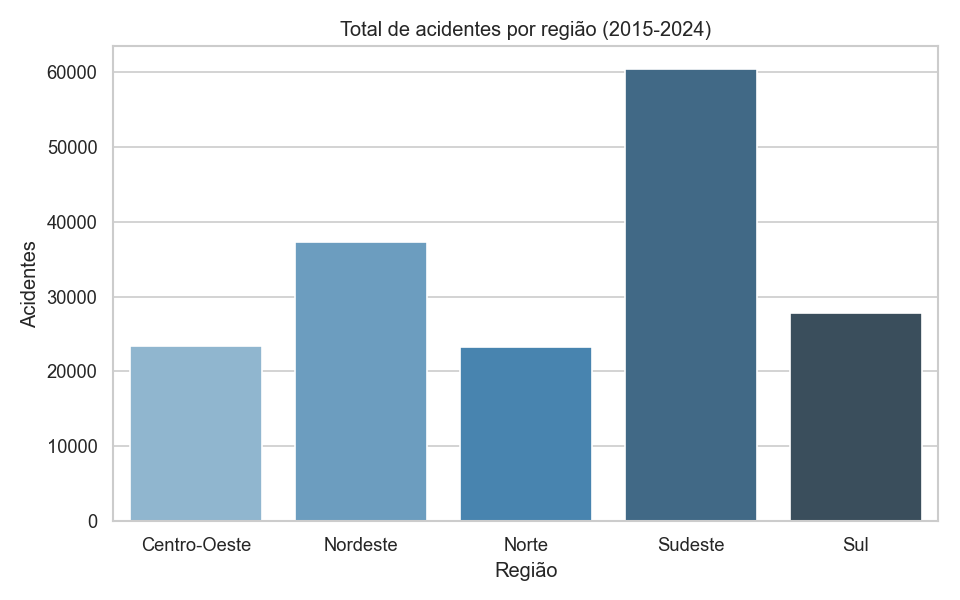
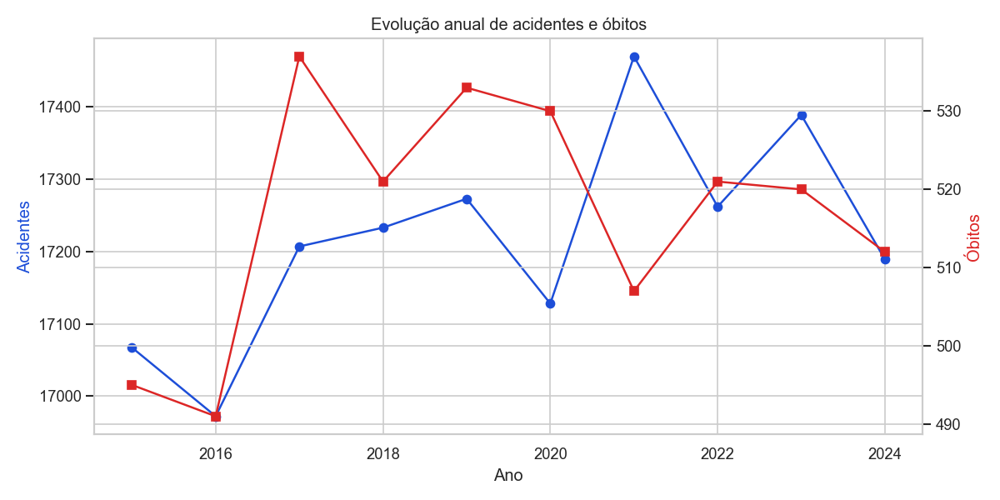
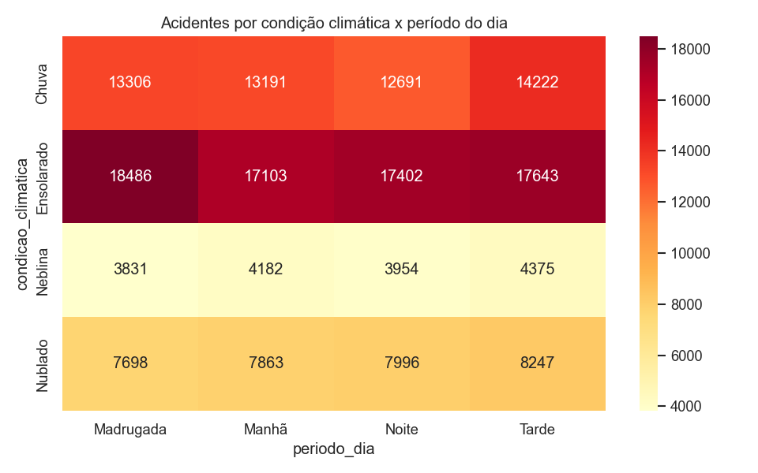
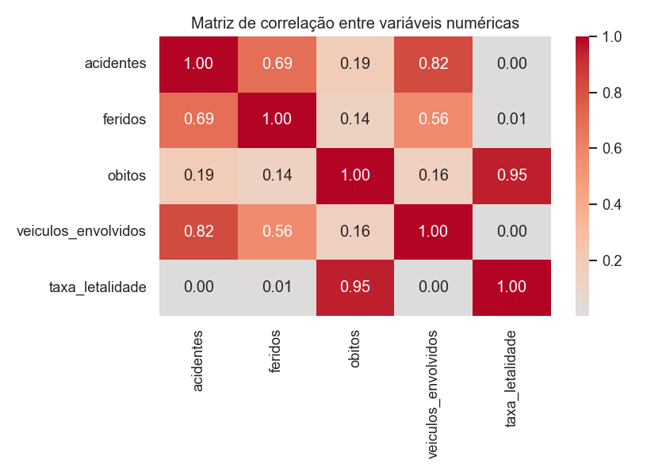

Sobre o projeto
Este projeto apresenta uma análise exploratória de ocorrências simuladas de acidentes de trânsito nas rodovias brasileiras entre 2015 e 2024, cobrindo as 5 regiões e 20 estados do país, considerando volume de acidentes, feridos, óbitos, veículos envolvidos, condições climáticas, período do dia e nível de gravidade.
A proposta é demonstrar um fluxo completo de projeto analítico: preparação dos dados, análise exploratória, criação de indicadores, visualizações, dashboard interativo e publicação em ambiente web.
Perguntas de negócio
- Qual é o volume total de acidentes, feridos e óbitos no período analisado?
- Quais regiões, estados e rodovias concentram mais ocorrências e mais óbitos?
- Existe variação temporal (anual/mensal) relevante no número de acidentes?
- Quais condições climáticas e períodos do dia são mais críticos?
- Qual a relação entre veículos envolvidos e a quantidade de feridos/óbitos?
Indicadores analisados
Soma das ocorrências registradas.
Soma dos óbitos associados aos acidentes.
Percentual de óbitos sobre o total de acidentes.
Total de veículos envolvidos nas ocorrências.
Principais gráficos




Tecnologias utilizadas
Arquivos do projeto
Acesse os principais componentes do projeto:
Ver Repositório GitHub Ver README Ver Notebook Baixar Base de DadosDashboard interativo
O dashboard principal foi desenvolvido com Streamlit e permite explorar os dados por meio de filtros múltiplos, KPIs dinâmicos, gráficos interativos e mapas.
Acessar Dashboard StreamlitObjetivo pedagógico
Este projeto serve como entrega da avaliação G1 da disciplina, mostrando como transformar uma base de dados em um produto analítico completo, organizado e publicável.
Mais importante do que criar gráficos é responder perguntas relevantes e apoiar a tomada de decisão.